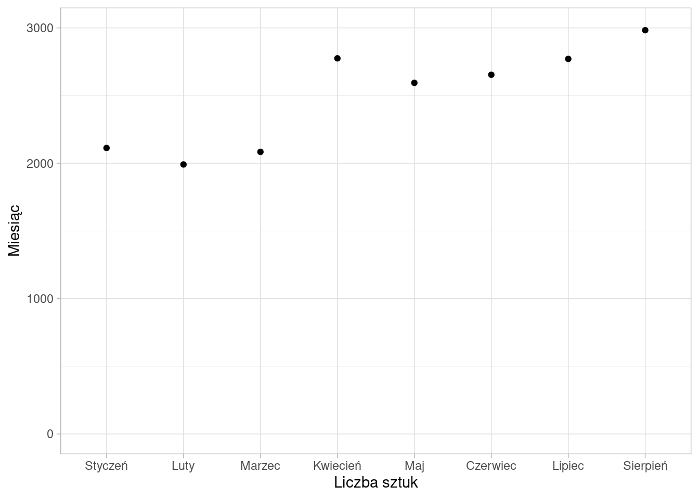

| miesiac | liczba_sztuk |
|---|---|
| Styczeń | 2113 |
| Luty | 1991 |
| Marzec | 2084 |
| Kwiecień | 2775 |
| Maj | 2594 |
| Czerwiec | 2654 |
| Lipiec | 2771 |
| Sierpień | 2983 |
7 Analiza szeregu dynamicznego
Badanie szeregu dynamicznego umożliwia dokładne określenie zmian jakie zachodzą w kolejnych okresach. Za przykład posłuży sprzedaż piwa w województwie wielkopolskim w kolejnych okresach.

7.1 Przyrosty absolutne
Odejmowanie dwóch wielkości liczbowych daje w wyniku dodatni lub ujemny przyrost absolutny (bezwzględny). Przyrosty mogą być obliczane w stosunku do jednego okresu (momentu) lub też okresu (momentu) stale zmieniającego się.
Jeśli poszczególne wyrazy szeregu dynamicznego oznaczymy przez:
\[y_1, y_2, y_3, ..., y_n\]
to ciąg przyrostów absolutnych o podstawie stałej \(y_1\) (jednopodstawowych) przedstawia się następująco:
\[y_2-y_1, y_3-y_1, ..., y_{n-1}-y_1, y_n-y_1\]
Natomiast ciąg przyrostów absolutnych o podstawie zmiennej (łańcuchowych) ma postać:
\[y_2-y_1, y_3-y_2, ..., y_{n-1}-y_{n-2}, y_n-y_{n-1}\]
Przyrosty absolutne informują o tym, o ile jednostek wzrósł (znak plus) lub zmalał (znak minus) poziom badanego zjawiska w okresie (momencie) badanym w porównaniu z okresem (momentem) przyjętym za podstawę. Przyrosty absolutne są wyrażone w tych samych jednostkach miary co badane zjawisko.
Przyrosty absolutne o podstawie w maju oraz przyrosty absolutne łańcuchowe przedstawione są w tabeli.
| miesiac | liczba_sztuk | Paj | Pal |
|---|---|---|---|
| Styczeń | 2113 | -481 | NA |
| Luty | 1991 | -603 | -122 |
| Marzec | 2084 | -510 | 93 |
| Kwiecień | 2775 | 181 | 691 |
| Maj | 2594 | 0 | -181 |
| Czerwiec | 2654 | 60 | 60 |
| Lipiec | 2771 | 177 | 117 |
| Sierpień | 2983 | 389 | 212 |
Na podstawie przyrostów absolutnych jednopodstawowych stwierdzamy, że sprzedaż piwa w lutym była o 603 sztuki mniejsza w porównaniu do maja. Z kolei przyrosty absolutne łańcuchowe informują o tym, że lipcu liczba sprzedanych piw była większa o 117 sztuk w porówaniu do czerwca.
7.2 Przyrosty względne
Iloraz przyrostów absolutnych zjawiska i jego poziomu w okresie (momencie) przyjętym za podstawę porównań nazywamy przyrostem względnym.
Ciąg wartości przyrostów względnych o stałej podstawie \(y_1\) (jednopodstawowych) jest następujący:
\[\frac{y_2-y_1}{y_1}, \frac{y_3-y_1}{y_1}, ..., \frac{y_{n-1}-y_1}{y_1}, \frac{y_n-y_1}{y_1}\]
Ciąg wartości przyrostów względnych o podstawie zmiennej (łańcuchowych) ma postać:
\[\frac{y_2-y_1}{y_1}, \frac{y_3-y_2}{y_2}, ..., \frac{y_{n-1}-y_{n-2}}{y_{n-2}}, \frac{y_n-y_{n-1}}{y_{n-1}}\]
Przyrosty względne wyrażane są w procentach. Informują o ile wyższy lub niższy jest poziom badanego zjawiska w danym okresie w stosunku do okresu przyjętego za podstawę (przyrosty względne jednopodstawowe) lub w stosunku do okresu bezpośrednio poprzedzającego (przyrosty względne łańcuchowe). Przyrosty względne mogą być wartościami dodatnimi, ujemnymi lub równymi zero. Określane są niekiedy mianem wskaźników tempa przyrostu.
| miesiac | liczba_sztuk | Pwj | Pwl |
|---|---|---|---|
| Styczeń | 2113 | -18.54 | NA |
| Luty | 1991 | -23.25 | -5.77 |
| Marzec | 2084 | -19.66 | 4.67 |
| Kwiecień | 2775 | 6.98 | 33.16 |
| Maj | 2594 | 0.00 | -6.52 |
| Czerwiec | 2654 | 2.31 | 2.31 |
| Lipiec | 2771 | 6.82 | 4.41 |
| Sierpień | 2983 | 15.00 | 7.65 |
Na podstawie przyrostów względnych jednopodstawowych stwierdzamy, że sprzedaż piwa w lutym była o 22,25% mniejsza w porównaniu do maja. Z kolei przyrosty względne łańcuchowe informują o tym, że lipcu liczba sprzedanych piw była większa o 4,41% w porówaniu do czerwca.
7.3 Indeksy
Indeksem (wskaźnikiem dynamiki) nazywamy każdą liczbę względną powstałą przez podzielenie wielkości danego zjawiska w okresie badanym (sprawozdawczym) przez wielkość tego zjawiska w okresie podstawowym (bazowym). Jeżeli poziom zjawiska w okresie (momencie) badanym oznaczymy symbolem \(y_1\), a w okresie podstawowym symbolem \(y_0\), to ogólny wzór na indeks przyjmie postać: \(i=\frac{y_1}{y_0}\).
Indeks jest wielkością niemianowaną i może być wyrażony w ułamku lub w procentach. Jeżeli indeks przyjmie wartość z przedziału \(0 \leq i < 1\), świadczy to o spadku poziomu zjawiska w okresie badanym w stosunku do okresu podstawowego. Większa od 1 (lub od 100%) wartość indeksu informuje o wzroście poziomu zjawiska w okresie badanym w porównaniu z okresem podstawowym. Wreszcie indeks równy 1 oznacza, że poziomy zjawiska w okresach badanym i podstawowym są takie same.
Ciąg indeksów o stałej podstawie \(y_1\) (jednopodstawowych) można zapisać:
\[\frac{y_1}{y_1}, \frac{y_2}{y_1}, ..., \frac{y_{n-1}}{y_1}, \frac{y_n}{y_1}\]
Ciąg indeksów o podstawie zmiennej (łańcuchowych) ma postać:
\[\frac{y_2}{y_1}, \frac{y_3}{y_2}, ..., \frac{y_{n-1}}{y_{n-2}}, \frac{y_n}{y_{n-1}}\]
Między przyrostami względnymi a indeksami istnieje ścisły związek. Indeksy jednopodstawowe można otrzymać z przyrostów względnych o podstawie stałej poprzez dodanie 100 (lub jedności, jeśli posługujemy się ułamkami, a nie wielkościami procentowymi). W analogiczny sposób można dokonać przejścia z indeksów łańcuchowych na przyrosty względne łańcuchowe. Oczywiście można dokonać również operacji odwrotnej, tzn. zamienić indeksy na przyrosty względne.
| miesiac | liczba_sztuk | Ij | Il |
|---|---|---|---|
| Styczeń | 2113 | 81.46 | NA |
| Luty | 1991 | 76.75 | 94.23 |
| Marzec | 2084 | 80.34 | 104.67 |
| Kwiecień | 2775 | 106.98 | 133.16 |
| Maj | 2594 | 100.00 | 93.48 |
| Czerwiec | 2654 | 102.31 | 102.31 |
| Lipiec | 2771 | 106.82 | 104.41 |
| Sierpień | 2983 | 115.00 | 107.65 |
W praktyce badań statystycznych częściej wykorzystuje się indeksy niż przyrosty względne. Na indeksach wygodniej jest bowiem dokonywać określonych przekształceń i działań algebraicznych. Działania, jakie mogą być dokonywane na indeksach, sprowadzają się w zasadzie do zamiany indeksów jednopodstawowych na łańcuchowe i odwrotnie oraz do zmiany podstawy w szeregu indeksów o podstawie stałej.
Zamiany indeksów jednopodstawowych na łańcuchowe dokonuje się poprzez dzielenie indeksów jednopodstawowych przez siebie:
\[\frac{y_i}{y_1}/\frac{y_{i-1}}{y_1}=\frac{y_i}{y_{i-1}}\]
W praktyce indeksy łańcuchowe na podstawie indeksów jednopodstawowych liczymy tak samo jak zwykłe indeksy łańcuchowe, tylko zamiast wartości bezwzględnych podstawiamy wartości indeksów jednopodstawowych.
Zamiany indeksów łańcuchowych na jednopodstawowe dokonuje się według następujących zasad:
- indeks jednopodstawowy w okresie przyjętym za podstawę wynosi 100%;
- indeks jednopodstawowy w okresie następującym bezpośrednio po okresie przyjętym za podstawę jest taki sam jak indeks łańcuchowy;
- dalsze indeksy jednopodstawowe po okresie przyjętym za podstawę otrzymujemy, mnożąc wyznaczony indeks jednopodstawowy z okresu wcześniejszego przez indeks łańcuchowy dla analizowanego okresu;
- indeksy jednopodstawowe przed okresem podstawowym są ilorazem indeksu jednopodstawowego z okresu następnego oraz indeksu łańcuchowego z okresu następnego.
Zmiany podstawy w indeksach jednopodstawowych dokonuje się poprzez dzielenie poszczególnych indeksów przy danej podstawie przez indeks jednopodstawowy tego okresu, który przyjmuje się za nową podstawę. Innymi słowy, indeks jednopodstawowy o nowej podstawie liczymy w taki sam sposób jak byśmy liczyli indeks jednopodstawowy na podstawie wartości bezwzględnych, ale zamiast nich podstawiamy wartości indeksów jednopodstawowych.
7.4 Średnie tempo zmian
Indeksy jednopodstawowe i łańcuchowe pozwalają na ocenę zmian badanego zjawiska między dwoma wyróżnionymi okresami (momentami). Często jednak zachodzi konieczność oceny zmian danego zjawiska w całym okresie objętym obserwacją. Do tego celu wykorzystuje się średnią geometryczną.
Średnia geometryczna jest pierwiastkiem \(n\)-tego stopnia z iloczynu \(n\) zmiennych. Średnie tempo zmian zjawisk ujętych w formie szregów czasowych oblicza się najczęściej na podstawie indeksów łańcuchowych. Ponieważ z \(n\) wielkości absolutnych można utworzyć \(n-1\) indeksów łańcuchowych, przez to wzór na średnią geometryczną indeksów łańcuchowych przyjmuje postać:
\[\bar{y}_g=\sqrt[n-1]{\frac{y_2}{y_1}\cdot\frac{y_3}{y_2}\cdot\frac{y_4}{y_3}\cdot...\cdot\frac{y_{n-1}}{y_{n-2}}\cdot\frac{y_n}{y_{n-1}}}=\sqrt[n-1]{\prod_{i=2}^{n}{\frac{y_i}{y_{i-1}}}}=\sqrt[n-1]{\frac{y_n}{y_1}}\]
Średnie tempo zmian wyrażone w procentach określa, jaki jest przeciętny okresowy przyrost procentowy analizowanego zjawiska w badanym przedziale czasowym.
Średnia geometryczna indeksów łańcuchowych sprzedanych piw wynosi 105.05%, co oznacza, że liczba sprzedanych piw w województwie wielkopolskim rosła z miesiąca na miesiąc przeciętnie o 5.05%.
Obliczone średnie tempo zmian można wykorzystać w celach prognostycznych. Zakładając, że w kolejnych okresach badane zjawisko będzie rozwijać się w dotychczasowym tempie:
\[y_T=y_n\cdot \bar{y}_{g}^{(T-n)}\]
gdzie:
- \(T\) — numer okresu prognozowanego,
- \(n\) — numer ostatniego okresu.
Przeprowadzenie szacunku z wykorzystaniem powyższej metody wymaga jednak, by dotychczasowy rozwój tej zmiennej był jednokierunkowy i nie podlegał zbyt dużej zmienności. Stosując tę regułę nie można ustalić błędu prognozy.
Zakładając, że we wrześniu popyt na piwo nie spadnie, prognozowana sprzedaż wyniesie 3134 sztuk.
Znając wartość cechy w ostatnim okresie możemy, z wykorzystaniem indeksów łańcuchowych, odtworzyć wartości cechy dla okresów wcześniejszych dzieląc wartość cechy przez indeks łańcuchowy.
Zadania
- Na podstawie danych dotyczących liczby sprzedanych sztuk piwa w województwie mazowieckim:
- oblicz średnie tempo zmian i je zinterpretuj
- o ile procent zmieniła się sprzedaż piwa w marcu w porównaniu do czerwca?
- jaka jest prognozowana sprzedaż piwa w październiku?
- Wyznacz indeksy łańcuchowe dla liczby sprzedanych sztuk piwa w sklepach sieci detalicznej. Wyłącznie na ich podstawie określ:
- o ile procent zmieniła się sprzedaż piwa w sierpniu w porównianiu do czerwca?
- sprzedaż piwa w listopadzie wiedząc, że w sierpniu sprzedano 4146 sztuk
- ile wynosiła sprzedaż piwa w lutym?
- w których miesiącach sprzedaż piwa była mniejsza niż w miesiącu poprzedzającym?